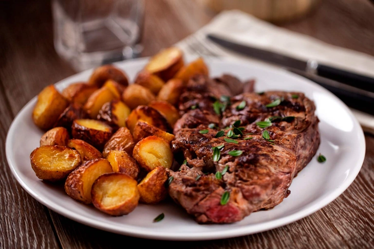

Urban apartment complex at dusk. It has tiled roofs and brick floors. This photo is dubbed "Twilight Sunset" by Dimitrios Savva.
Semana de la ciencia y la tecnologia feria empresarial
7 de Agosto (Día de la batalla de boyaca) — 20 de Julio (día de la independencia de Colombia)

Torneo Intercursos 2025 (Futbol de Salón) — Torneo Intercolegiados 2025 (Futbol Sala)
21 de Marzo (Día Mundial de la Poesía) — 23 de Abril (Día del idioma Español)
23 de Abril (Día del idioma Inglés) — 12 de Septiembre (English day 2025)
23 de Abril (Día del libro) — 4 de Marzo (Día mundial de la Lectura)
14 de Marzo (Día internacional de las Matemáticas) — 22 de Agosto (conmemoración día de las Matemáticas)
2 de marzo (Día Mundial del Agua) — 28 de Agosto (Caminata ecológica y Festival de Cometas)
Miércoles de Cenizas (Inicio de la cuaresma) — 13 al 20 de Abril (Semana Santa)
5 de Junio (Día mundial del medio ambiente) — 10 de Noviembre (Día Mundial de la Ciencia)
Miércoles de Cenizas (Inicio de la cuaresma) — 13 al 20 de Abril (Semana Santa)